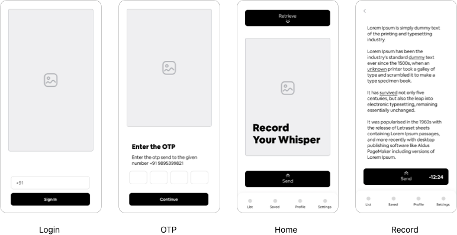

Capture your voice
Power of Artificial Intelligence
NoteWhisper, the AI-powered Voice-to-Text Mobile Application designed to revolutionize the way users capture, manage, and interact with their notes and information. NoteWhisper combines cutting-edge natural language processing (NLP) with an intuitive user experience to empower users to effortlessly create, retrieve, and organize notes using their voice.

My Role
My role involves conceptualizing, designing, and overseeing the development of innovative features that enhance the accuracy, efficiency, and user experience of the application. I collaborate closely with cross-functional teams including developers to understand user needs, define project objectives, and translate them into actionable design specifications. My responsibilities include conducting user research, prototyping interfaces, conducting usability testing, and iterating designs based on feedback to ensure seamless integration of AI technologies with intuitive user interfaces. Additionally, I am tasked with staying abreast of emerging trends in AI, voice recognition, and user interaction paradigms to continuously improve the application's performance and maintain its competitive edge in the market.
Why?
NoteWhisper revolutionizes note-taking and productivity with its comprehensive suite of features. Users can effortlessly create voice notes for various tasks, from composing emails to setting reminders, thanks to its seamless voice-to-text conversion. Moreover, NoteWhisper's advanced intent recognition and integration with default calendar and Zoom meeting apps streamline scheduling and remote collaboration, enhancing overall efficiency and organization. With its intuitive history viewer, smart text processing, and robust security measures, NoteWhisper ensures a smooth and secure user experience, empowering individuals to manage their tasks effectively.
Furthermore, NoteWhisper prioritizes user feedback and continuous improvement. Through features like NER feedback and feedback on retrieval responses, users actively contribute to refining the application's performance. Additionally, regular updates to the app's NLP and entity recognition models reflect NoteWhisper's commitment to staying at the forefront of technological advancements while safeguarding user privacy through data encryption. With customizable user profiles and preferences, NoteWhisper offers a tailored experience, catering to diverse user needs and preferences, ultimately redefining the landscape of voice-driven productivity applications.
Design & Research Tool Kit
Research
User Interview
Before starting a product like Notewhisper, conducting user interviews is crucial to gather insights about the user's needs, preferences, and potential challenges they might face with such an app. The interview sample took into account men and women aged from 18 to 60 with different technical aspects and sector. Here is a set of questions you can use to guide your interview:
Can you tell me about your current methods for taking notes or scheduling activities?
How often do you use voice-to-text technology or scheduling apps in your daily routine?
What features would you expect from an app that converts voice to text and helps you schedule activities?
What are the key benefits you would hope to gain from using this app?
How important is it for you to retrieve data and scheduled activities quickly and efficiently?
Are there any specific scenarios in which you would use this app?
Have you experienced any challenges with voice-to-text technology in the past? If so, what were they?
Do you have any concerns about privacy or data security when using voice-to-text apps?
How would you like the app to handle misunderstandings or errors in transcription?
How easy is it for you to adapt to new technology? What makes a user interface intuitive for you?
What kind of notifications or reminders would you find helpful from a scheduling app?
How would you like the app to integrate with other tools or apps you already use?
What additional features or improvements would you like to see in this app in the future?
How do you envision using this app in different areas of your life (e.g. work, personal life)?
Do you have any final thoughts or comments on how this app could be useful to you?
Would you be interested in participating in future testing or providing feedback on this app?


These questions will help you understand how the user perceives the app, what features are most important to them, and how you can improve the app to meet their needs and expectations.
Desk Research
In addition, I researched data and habits related to other similar applications. The goal was to understand how competitors behave and what features they are provideing.
With the research we got to know that there is few applications providing few of our business models. But the data retreival was not great with the current models.
The Solution
User Flow
The main point of the flow is to ensure that the functionality is always visible to the user, but not in an obstructive way. So I decided to add the record and retreive option in same screen coz that is the main requirements of this application.
By swiping on record or retrieve button we can record and recieve data accordingly.
Wireframing
The Wireframe was designed to build the structure and architecture of the information and only then go to visual and interactions.
User Interface
Branding
Color
The brand’s guidelines led us to pick a playful and inviting tone, so we chose Red and Navy Blue to break the white and make the brand youthful and remarkable.
For text, Black and a much darker variation of Red has been brought in to ensure reading and contrast, thus reaching appropriate levels of accessibility.
Typography
Since 50% of users said they prefer reading paper books for feeling and nostalgia, we understand that this could be used as an opportunity in the app interface. Therefore, we use the combination of Tiempos serif typography with a sans-serif Circular.

Thanks
A big thanks to the people who participated in the interviews and gave me feedback to improve the idea.In particular, I thank Marcela Coutinho, Juliana Arthuso, Paula Ramão, Mariano Dantas, Matheus Giaccomini, Manuela Doerr, Camila Teixeira, Felipe Besson.That’s all.